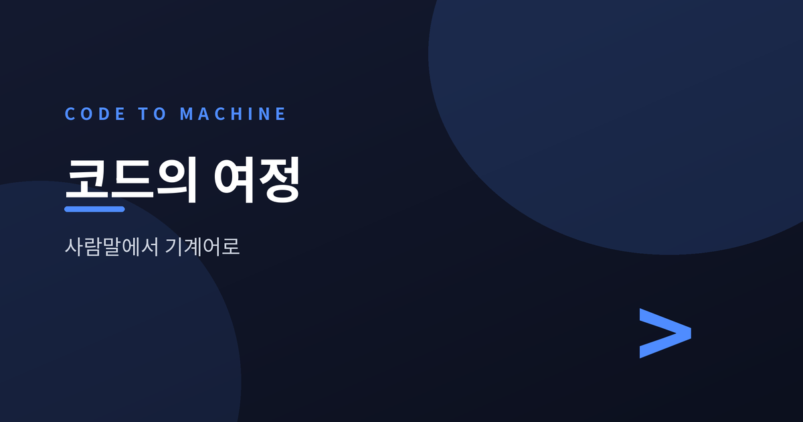
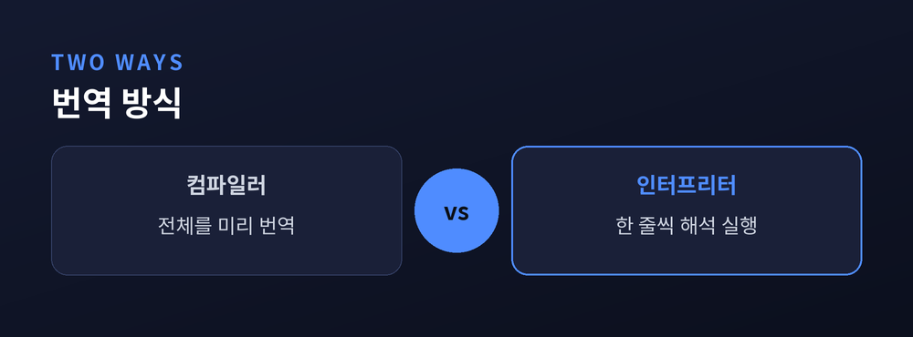
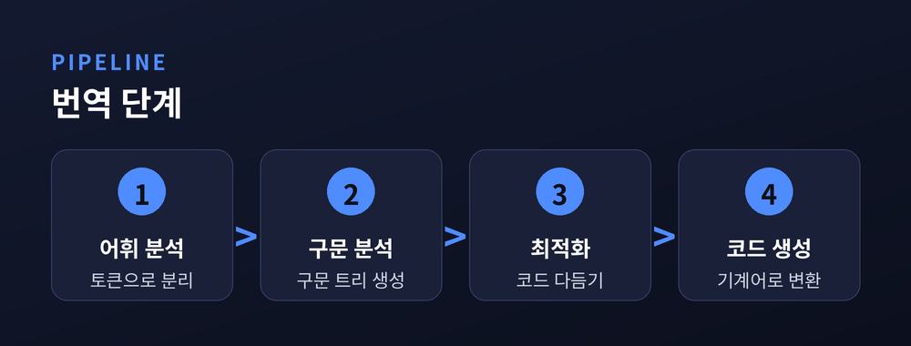
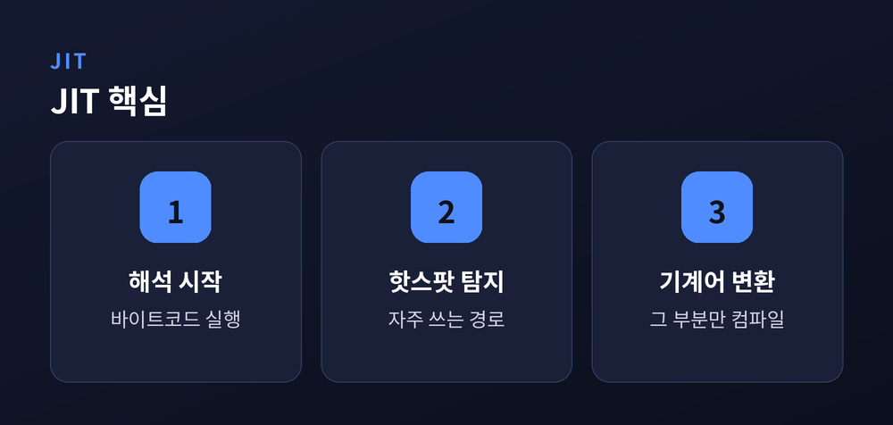
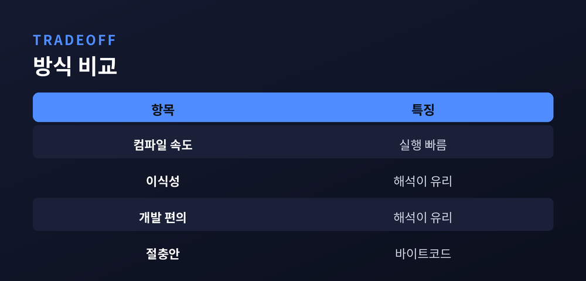

사람의 코드가 기계어가 되기까지

우리가 작성하는 코드는 영어 단어와 기호로 이루어진 사람의 언어입니다. 하지만 컴퓨터의 부품은 오직 0과 1의 전기 신호만 이해합니다. 이 둘 사이의 통역을 맡는 것이 바로 컴파일러와 인터프리터입니다. 두 방식이 어떻게 다른지, 코드가 기계어로 바뀌는 과정은 어떤 모습인지 차근차근 살펴보겠습니다.
컴파일러는 프로그램 전체를 미리 스캔해 기계어로 한꺼번에 번역합니다. 번역이 끝나면 실행 파일이 만들어지고, 이후에는 그 파일을 곧바로 실행합니다. 전체 코드를 먼저 검사하기 때문에 실행 전에 오류를 발견할 수 있습니다.
인터프리터는 방식이 다릅니다. 실행 시점에 코드를 한 줄씩 읽어 그 자리에서 해석하고 실행합니다. 미리 만들어 둔 실행 파일이 없으니, 고치고 바로 돌려보는 과정이 간편합니다. 대신 실행할 때마다 매번 해석을 거쳐야 하므로 같은 작업이라도 시간이 더 걸립니다. 통째로 번역해 두느냐, 그때그때 읽어 주느냐. 이 차이가 두 방식의 성격을 가릅니다.

번역 과정은 여러 단계를 거칩니다. 먼저 어휘 분석은 소스 코드를 토큰이라는 의미 단위로 잘게 쪼갭니다. 다음으로 구문 분석은 이 토큰들이 문법에 맞는지 확인하며 추상 구문 트리를 만듭니다.
트리를 만드는 과정에서 문법에 어긋난 부분이 있으면 이때 걸러집니다. 이어서 최적화 단계는 같은 결과를 더 빠르고 가볍게 내도록 중간 코드를 다듬습니다. 불필요한 계산을 줄이고 반복을 정리하는 손질입니다. 마지막으로 코드 생성이 다듬어진 코드를 실제 기계어로 옮깁니다. 사람의 문장이 부품이 알아듣는 신호로 바뀌는 순간입니다.

컴파일과 해석 사이에는 절충안도 있습니다. JIT는 실행 중에 필요한 부분만 그때그때 기계어로 바꾸는 방식입니다. 자바는 소스를 바이트코드로 만들고, JVM이 이를 실행하며 자주 쓰이는 부분을 기계어로 컴파일합니다.
자바스크립트 엔진 V8도 비슷합니다. 코드를 바이트코드로 바꿔 해석하다가, 자주 실행되는 경로를 찾아 기계어로 컴파일해 속도를 끌어올립니다. 처음에는 해석기의 빠른 출발을 활용하고, 실행 정보가 쌓이면 무거운 부분만 골라 최적화하는 셈입니다. 두 방식의 장점을 실행 도중에 함께 취하는 영리한 절충입니다.
"먼저 해석으로 빠르게 출발하고, 자주 쓰이는 길만 골라 기계어로 다진다."

컴파일 방식은 실행이 빠릅니다. 다만 CPU 종류가 바뀌면 다시 컴파일해야 하고, 코드를 고칠 때마다 번역을 기다려야 합니다. 해석 방식은 그 반대입니다. 실행은 느리지만 인터프리터만 있으면 어디서든 돌아가고, 수정과 확인이 빠릅니다.
그래서 정답은 하나가 아닙니다. 성능이 중요한 곳에는 컴파일이, 빠른 개발이 중요한 곳에는 해석이 어울립니다. 무거운 연산을 다루는 프로그램과 화면을 다루는 프로그램은 우선순위가 다르기 때문입니다. 자바나 파이썬처럼 바이트코드로 두 장점을 함께 취하는 언어도 많습니다.

번역 방식의 선택은 결국 무엇을 우선할지에 대한 답입니다. 속도냐 유연함이냐, 그 사이에서 언어들은 저마다의 균형을 찾아왔습니다. 지금 이 글을 띄운 브라우저 안에서도, 그 조용한 통역이 쉼 없이 돌아가고 있습니다.
참고 소스